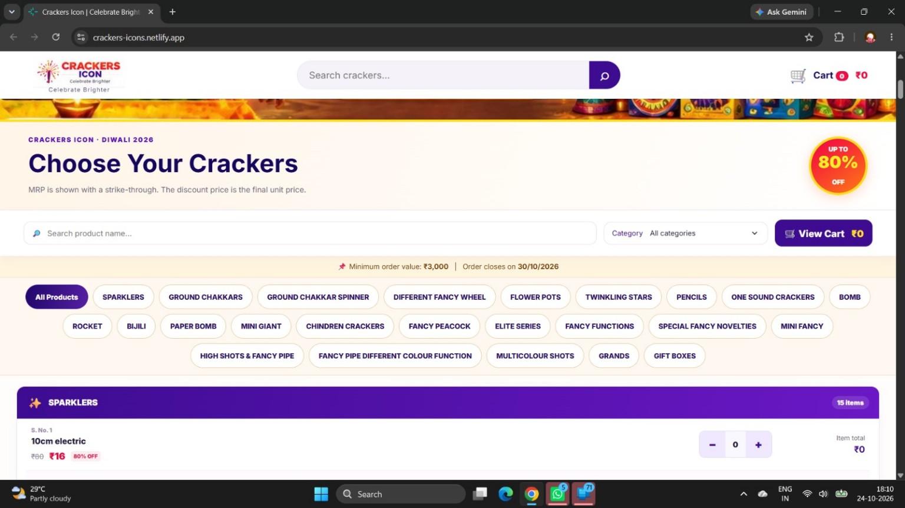
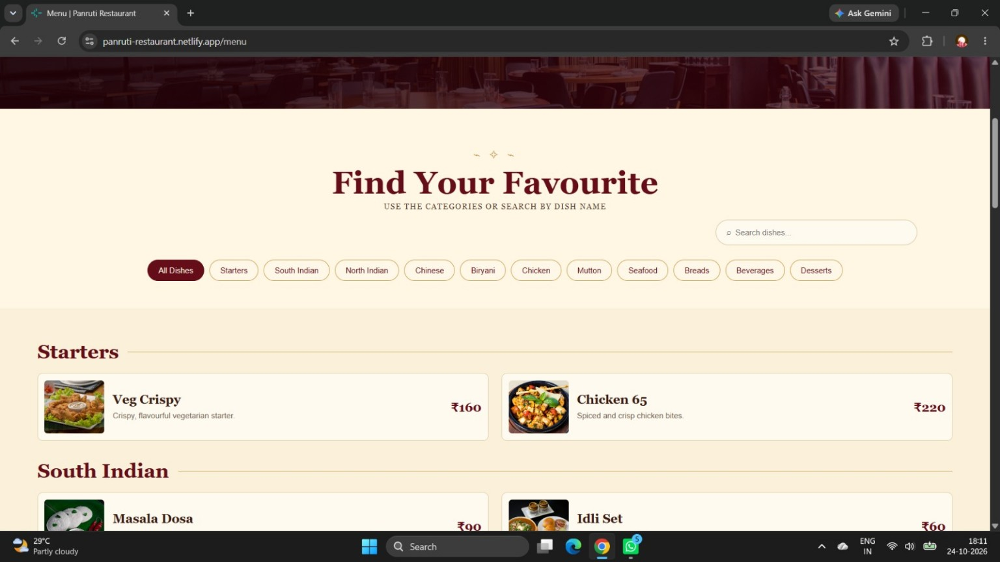
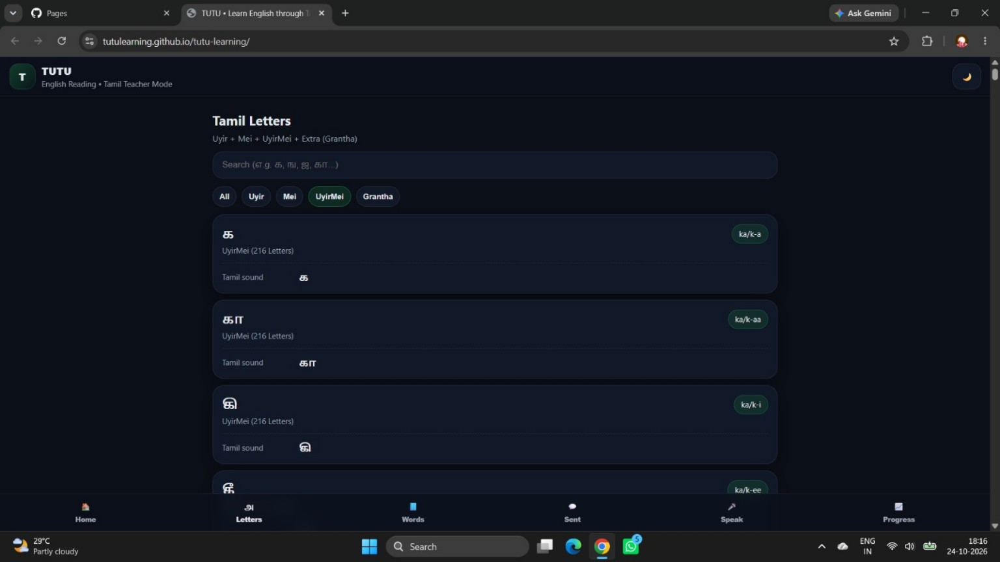

Website development
Responsive business websites, product catalogues and landing pages designed to look good across devices.
I create clean, responsive websites and clear, useful data dashboards that help ideas and businesses move forward.
WHAT I DO
A thoughtful mix of design, development and data skills to turn your requirements into useful digital tools.
Responsive business websites, product catalogues and landing pages designed to look good across devices.
Turn spreadsheets and datasets into clear summaries, meaningful patterns and better-informed decisions.
Organised reports and dashboard concepts that make important metrics easier to understand.
SELECTED WORK
A selection of my web projects. Explore the live demos to see the experience in action.

↗A festive product website concept with catalogue presentation and an order-friendly shopping experience.

↗A restaurant website demo featuring restaurant information, menu presentation and clear navigation.

↗An educational interface concept focused on making English learning approachable for Tamil speakers.
HOW I LIKE TO WORK
I love turning real-world needs into digital work that feels clear, thoughtful and genuinely useful.
I enjoy shaping ideas into responsive websites with intuitive navigation, polished details and a smooth experience on every screen.
I explore data with Python, Excel and Power BI to uncover patterns, explain performance and make information easier to act on.
A LITTLE ABOUT ME
I’m Sumithra B, a data analyst and web developer working across Python, Power BI, Advanced Excel and website development. I build responsive websites, organise data into meaningful insights, and create clear dashboards and reports that support better decisions.
I enjoy combining analytical thinking with thoughtful design to turn business requirements into practical digital solutions. My focus is on clean presentation, useful functionality and reliable results.
HAVE A PROJECT IN MIND?
Have an idea for a website, catalogue or dashboard? Let’s talk about what you need.
Start a conversation in View my LinkedIn profile ↗